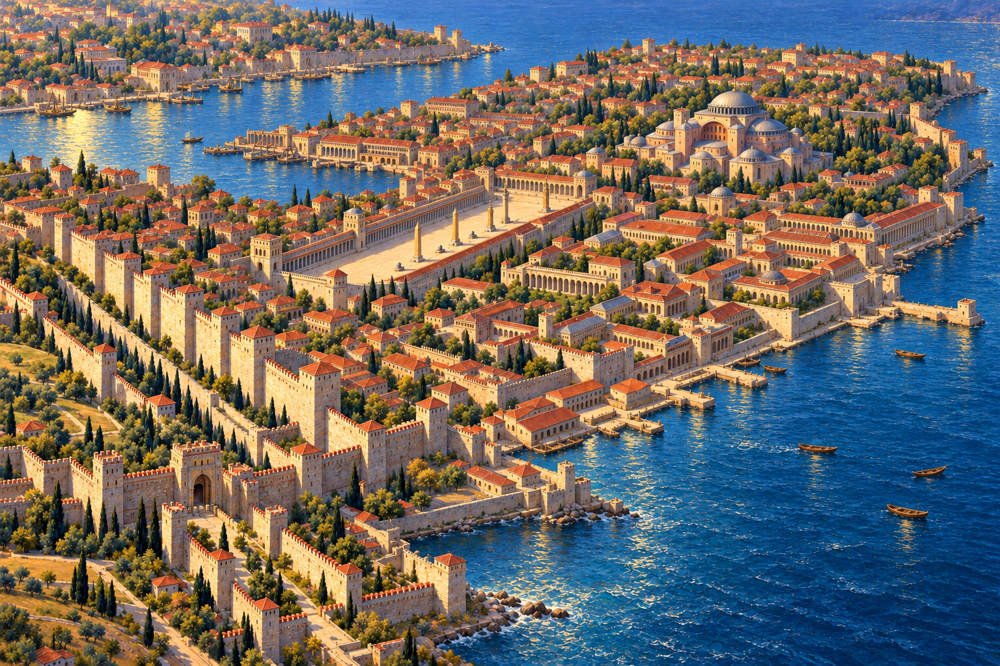
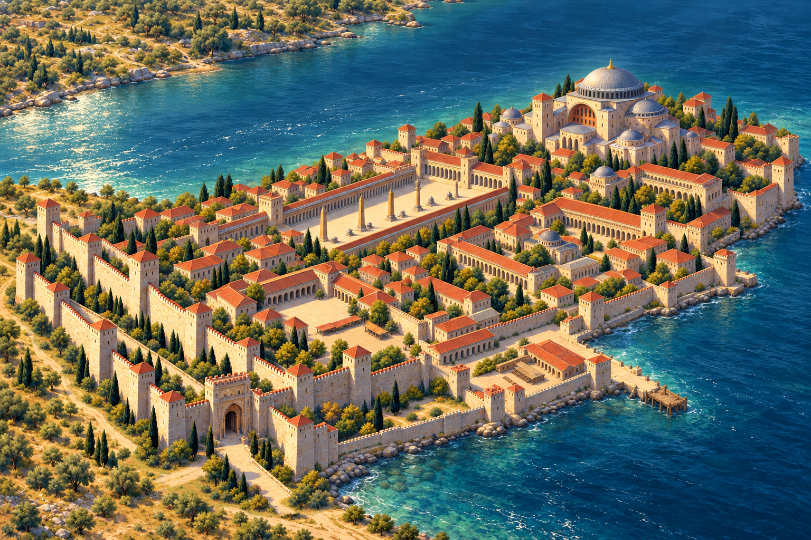
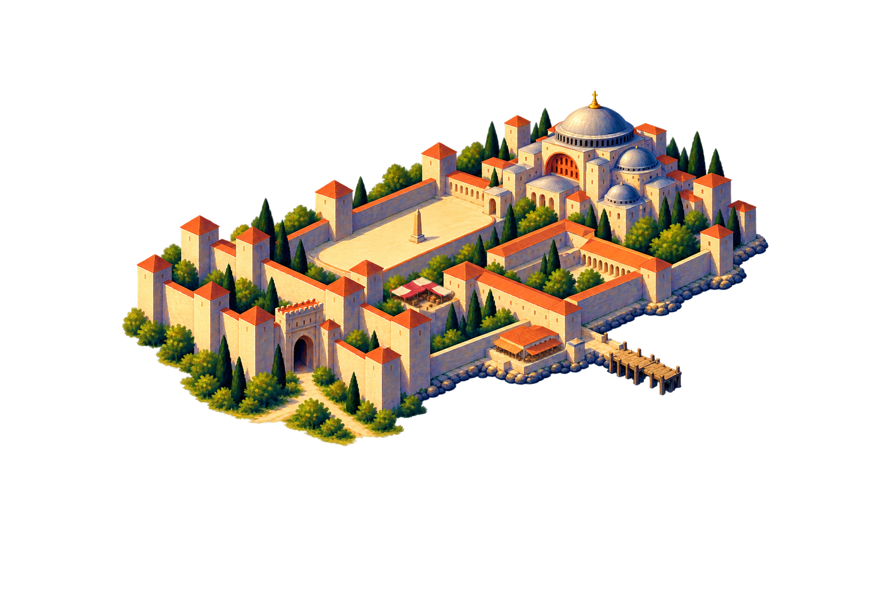
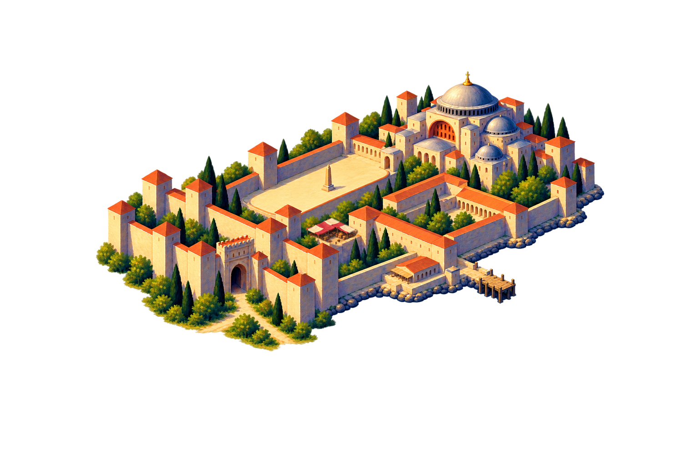
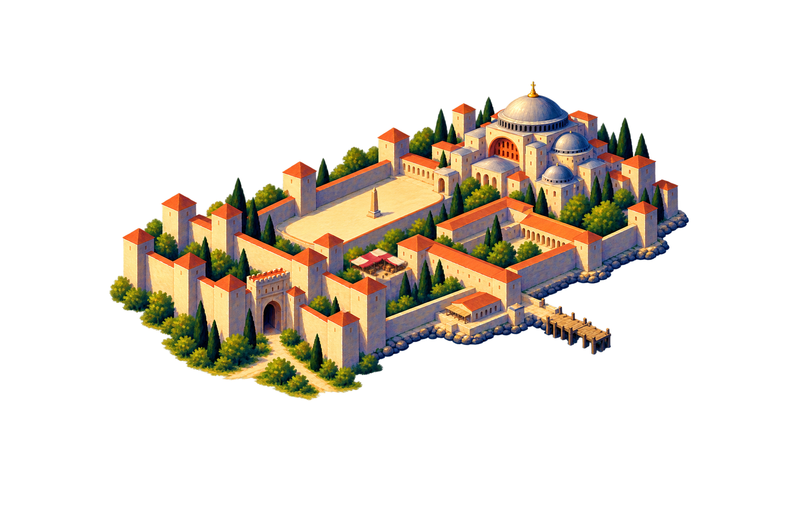
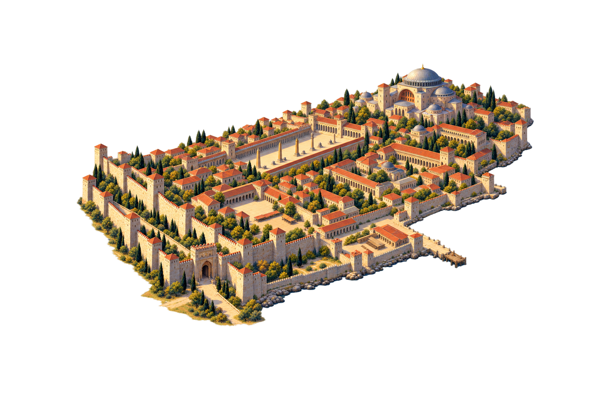
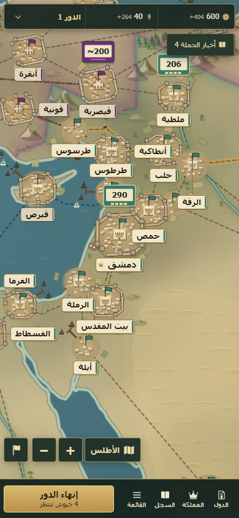

IMPERIAL ILLUMINATED ATLAS
Feasibility pilot 01 · Constantinople, 715 CE · Owner approval pending
Local comparison only — no game integration
هذه مقارنة محلية لأعمال مرسومة مولّدة فعليًا. ثبات الطبقات لا يثبت جودة القراءة أو الصحة التاريخية. اعرض الصفحة بتكبير المتصفح 100٪؛ صور GitHub قد تُصغَّر تلقائيًا.
A1 style master / A3 expanded inspection
Large review images; not mobile-scale evidence. The strategic asset is a dedicated repaint.




A4 / actual CSS widths
Image boxes are exactly 32 / 48 / 64 / 96 CSS px, including transparent margins. All use anchor (768,799). No per-state auto-fit.

Crowded strategic context
Constructed terrain, routes, labels and neighbor markers. Not an authentic Phase R screenshot. City art is the genuine layered S3 raster.

N1 • routeN2N3N4القسطنطينية240180Progression at actual size
Same camera, anchor and scale in every cell. These labels make this a review sheet, not a blind human test.


Value and silhouette check
64 CSS px, without color cues. No numerical or participant score assigned.

Phase R / authentic source and offline overlay
Left: unmodified committed screenshot from synthetic Playwright test data. Right: identical background with our 64 CSS px art placed over it as a clutter test. This is NOT game integration and NOT Constantinople’s campaign coordinates; coastline adaptation is not validated here.

390 CSS px viewport · browser emulation only. 100% page zoom. Width includes alpha margins.
Actual-size city / light, dark, coast
64 CSS px / cumulative states
Pending: physical devices, blind recognition, owner art approval.